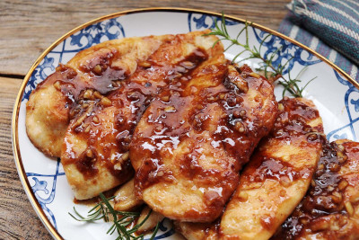

Menu
Frango com mel e especiarias na air fryer
O frango com mel e especiarias na air fryer é uma receita que destaca ingredientes marcantes para potencializar o sabor do frango. O segredo para torná-lo ainda mais delicioso é temperar pela manhã e assá-lo no fim do dia. Essa dica garante uma experiência culinária prática e saborosa. Confira como preparar:

Ingredientes
- Meio peito de frango desossado e sem pele ou cerca de 350 gramas
- 1 dente de alho
- 1 colher de sopa de mel puro
- 1 colher de sopa de extrato de tomate
- 1 colher de sopa de azeite de oliva
- Meia colher de chá de sal
- 1 colher de chá de semente de coentro
- 2 colheres de chá de páprica doce
- pimenta-do-reino moída na hora a gosto
Modo de Preparo
-
No pilão, dê uma leve batida no alho para descascar. Adicione o sal, as sementes de coentro e bata até o alho se desmanchar.
Junte o azeite, o mel, o extrato de tomate e a páprica e misture bem. Se o seu pilão for pequeno, misture numa tigela.
-
Corte o frango em pedaços de cerca de 3 centímetros — não é preciso que sejam cubos perfeitos para não haver desperdício, mas os pedaços devem ter o tamanho uniforme para assar por igual.
-
Transfira o frango para uma tigela, adicione a marinada e pimenta a gosto. Misture bem com uma espátula para envolver todos os pedaços.
Preaqueça a air fryer a 180 graus Célsius e programe para assar por 12 minutos.
-
Coloque os pedaços de frango no cesto da air fryer, um ao lado do outro — eles podem ficar próximos, só não devem ser colocados um em cima do outro.
-
Deixe assar por 12 minutos, até o frango dourar e alguns pedacinhos ficarem tostadinhos — não precisa virar na metade do tempo. Sirva a seguir.